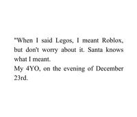

0
0


0


Coinbase has launched Coinbase for Agents, a tool that lets AI agents like ChatGPT or Claude execute crypto trades and manage payments on a user's behalf. "For example, customers can prompt their agent to rebalance portfolios, identify trading opportunities, execute strategies and manage positions over time," reports CNBC. "It will eventually expand these capabilities to stocks and predictions." From the report: [U]sing Coinbase's machine-to-machine payments protocol, called x402, agents can pay directly for digital services like paywalled research, data APIs and on-demand compute without a human in the loop -- and execute trades based on those insights. The company sees this stage of agentic payments, which lets customers bypass the need to manage traditional logins or subscriptions, as a precursor to agentic shopping, where agents browse, find the best deals, select and make purchases on users' behalf.
[...] The whole idea is to give agents access to money and, through that financial independence, improve their set of capabilities to pretty much anything on the internet," Lincoln Murr, Coinbase's AI product lead, told CNBC. "In the 2010s, every internet company dealt with the transition from desktop and web into a mobile environment. And now in the late 2020s, we're seeing the exact same thing happen where agents are going to be the new primary economic actors on the internet."
The x402 protocol was created in May 2025 and has seen more than 100 million transactions since its debut, Murr said. There are about 157,000 agents acting as buyers using the protocol in the past 30 days, according to x402scan.com. "We saw immediate demand and interest in the ability for agents to pay for things autonomously and that was a huge waking up moment for us [on] the ability of agents to become these new primary financial actors across the internet," he said.
Read more of this story at Slashdot.
fjo3 shares a report from Reason: Police arrested a man in Florida for attempted child abduction in a town he had never visited, and the only evidence linking him to the crime was an AI facial recognition hit. Represented by the American Civil Liberties Union (ACLU), he is now suing the officers and agencies who put him through it. [...] According to a police report, facial recognition software concluded with 93 percent confidence that the suspect was Robert Dillon. [...]
The ACLU is now suing the city of Jacksonville Beach, as well as the individual police officers and officials involved in the case. According to the lawsuit (PDF), the responding officer viewed security camera footage of the suspect but didn't take a copy; instead, he took pictures of the screen with his cell phone. "In the photos, the suspect image is low resolution, and the suspect's face is partially shadowed and off-axis," the lawsuit claims. When an investigator queried the facial recognition system, it was with the officer's grainy secondhand cell phone photos. [...]
But as the ACLU notes, facial recognition's accuracy "depends significantly on the quality of the probe image. Lower-quality images contain less interpretable facial data, degrading the system's ability to produce a reliable template." At the very least, it requires a much better source image. Besides, no such investigative tool should form the sole basis for an arrest warrant. "If you came to me with a facial recognition hit and that was your probable cause, I would probably kick you out of my office because that's not how it works," Jacksonville Sheriff T.K. Waters told local news. (Waters is among those being sued in the ACLU lawsuit, because it was an investigator from the Jacksonville Sheriff's Office who ran the grainy photo through facial recognition and advised O'Connell it was a "93% match" to Dillon.)
Read more of this story at Slashdot.
Opendoor is shutting down its India operations less than two years after opening offices there. Slashdot reader alternative_right shares a post from Opendoor CEO Kaz Nejatian: "I shared this note earlier today with the entire team at Opendoor. Today we began to say goodbye to our colleagues in India as we wind down our India operations. Our customers are in America, and that's where our operational work belongs." TechCrunch reports: In announcing the decision on Wednesday, CEO Kaz Nejatian cited a push to bring operational work back to the U.S., where Opendoor's customers are, and a shift toward smaller AI-native teams. The company did not respond to requests for comment on how many employees were affected or how much of the decision was driven by AI efficiency. But the announcement quickly gained traction across Silicon Valley, where founders, investors, and outsourcing experts see it as an early example of how AI is reshaping the economics that made India a global hub for back-office operations.
[...] Some investors viewed the decision as a sign of what AI could mean for India's vast outsourcing workforce. "As manual work gets replaced by AI, a lot of jobs will be lost in India," wrote Sheel Mohnot, co-founder of Better Tomorrow Ventures. Others viewed Opendoor as evidence of a larger shift in how companies are organized. Keshav Lohia, a venture capitalist at Emergent Ventures, described the decision as a "watershed moment" for AI-driven operations, arguing that advances in AI are beginning to challenge the cost-arbitrage model that made India a popular offshoring destination.
Phil Fersht, chief executive of HFS Research, an advisory firm that tracks the global outsourcing and business services industry, told TechCrunch that the development should not be viewed simply as jobs moving from India to the U.S. The more important shift, he said, is that AI is reducing the amount of operational labor companies require in the first place, allowing firms to run leaner organizations regardless of location. "This is not an isolated restructuring," Fersht said. "It is part of a much broader pattern we are starting to see as companies redesign operations around AI, automation, and much leaner workflows." Fersht argued that the winners would be companies that combine AI, software and human expertise to deliver outcomes without continually adding headcount, a model he described as "Services-as-Software." While Opendoor may be one of the first high-profile examples, he said it is unlikely to be the last.
Some investors are already extrapolating beyond individual companies. Varun Rekhi, a venture capitalist at Speedinvest, argued that if AI reduces demand for labor-intensive services, it could eventually pressure one of India's most important export industries, which is built around supplying talent and expertise to global corporations.
Read more of this story at Slashdot.
An anonymous reader quotes a report from Electrek: Solar generated more U.S. electricity than coal for the first month on record in May 2026, according to new analysis from global energy think tank Ember. Solar supplied 12.8% of U.S. electricity during the month, while coal dropped to 12.2%. That's a dramatic shift in the U.S. power mix. Just five years ago, coal generated 19.7% of U.S. electricity in May, while solar accounted for only 5.4%. U.S. solar generation hit a record 45.5 terawatt-hours (TWh) in May 2026, up 17% from May 2025 and higher than the previous record set last July. Ember says another record could be broken again this summer.
Solar output usually peaks in June or July, but its share of the electricity mix is often highest in spring, when strong sunshine lines up with milder temperatures before summer cooling demand ramps up. May was also the first time solar became the third-largest individual source of electricity in the U.S., behind only natural gas and nuclear. (If solar is included with all other renewables, then they're the second-largest source of electricity as an overall category of electricity.) Meanwhile, coal keeps sliding (and will continue to slide). Coal generation hit an all-time monthly low of 39.3 TWh in April 2026. Output rose slightly in May to 43.4 TWh, but it was still 11% lower than May 2025 levels. Even with that small rebound, coal couldn't keep pace with solar's rapid growth.
Read more of this story at Slashdot.
A researcher using the name Nightmare Eclipse has released a new Microsoft Defender zero-day exploit called "RoguePlanet," which reportedly works on fully patched Windows 10 and 11 systems and can spawn a command prompt with SYSTEM privileges through a Defender race condition. The release came just hours after Microsoft fixed two previously disclosed flaws during its latest monthly Patch Tuesday drop -- its largest Patch Tuesday release ever. BleepingComputer reports: The researcher shared a proof-of-concept exploit on Tuesday afternoon in a self-hosted Git repository after saying that GitHub and GitLab repositories hosting their exploits had previously been removed by Microsoft. "The exploit is a race condition, so it's a hit or miss. I have managed to get a 100% success rate on some machines while it struggled to work on others," Nightmare Eclipse wrote in the repository.
[...] Cybersecurity firm ThreatLocker told BleepingComputer that they successfully reproduced the flaw in their testing and confirmed the exploit worked against fully patched Windows 11 systems with KB5094126 installed, and shared a video demonstrating it. "Our initial analysis confirms that the RoguePlanet exploit is viable and performs as described. Organizations using application allowlisting can prevent the exploit from executing, providing an effective layer of protection against this attack," Danny Jenkins, CEO of ThreatLocker, told BleepingComputer.
According to Nightmare Eclipse, RoguePlanet was originally developed as a remote code execution vulnerability that exploited Microsoft Defender's handling of files hosted on remote SMB shares. "In initial development, it was confirmed that this vulnerability was a remote code execution," the researcher explained in a blog post. "It required an attacker to coerce a victim to open a .vhd(x) in a remote SMB server, succesful exploitation resulted in defender overwriting its own files and obviously the end outcome was an RCE."
The researcher says another attack scenario could lead to remote code execution simply by coercing a victim into opening an SMB share if symlink evaluation settings were enabled. However, the researcher claims Microsoft silently hardened Defender in mid-May by patching "mpengine!SysIO*" API, which blocked junction attacks. "Rewriting RoguePlanet to make it functional again drained my soul and I couldn't complete the other scenarios and for now it remains unclear if RoguePlanet is limited to LPE or there is some sort of way to turn it into an RCE," the researcher wrote.
Read more of this story at Slashdot.
Visa is integrating its payment network with ChatGPT so AI agents can shop and complete purchases on users' behalf. "It means AI agents can not only recommend products but complete the purchase on the user's behalf, at potentially any merchant that accepts Visa," reports the Associated Press. "The payment network's previous attempts at this technological leap were confined to a single retailer or a small set of enrolled merchants." From the report: OpenAI will provide the technology to allow agents to interact, make decisions and initiate purchases through ChatGPT. Visa, the world's largest payment network outside of China, will provide the payment authorization and fraud monitoring needed to do this at scale. "As AI agents become active participants in the economy, Visa's focus is to ensure transactions are trusted, secure and seamless," said Jack Forestell, chief product and strategy officer at Visa.
Speaking at a company event Wednesday in San Francisco Wednesday, Forestell gave an example of a customer telling ChatGPT they're looking for a pair of wireless headphones under $150. The chatbot would find a pair for sale under those parameters and buy it on behalf of the customer.
Visa and OpenAI did not disclose the financial terms of the collaboration and did not give details on the fees merchants or customers would have to pay. [...] Visa says the feature will have guardrails like spending limits, required approval steps and approved merchants for shopping in order to protect consumers and minimize fraud.
Read more of this story at Slashdot.
Two recent studies argue that smartphones may have contributed to falling birthrates by reducing in-person social interaction, sexual frequency, and other conditions tied to unintended pregnancies. "One of the studies published in May is called 'The Collapse of Teen Fertility in the Digital Era' and the other, published just Monday, is titled 'Is the iPhone Birth Control? Causal Evidence from AT&T's 2007-2011 Carrier Monopoly,'" reports KTLA. "Both were chronicled in a New York Times piece by political writer Sabrina Tavernise on Monday." Slashdot reader sabbede submitted the story. From the report: The one from May, authored by two University of Cincinnati professors, posits that teen fertility "collapsed globally" starting around 2007 -- the same year the first iPhone was released. "Smart phones changed how teens spend time with each other ... this change in turn drove the collapse in teen fertility," the study's abstract reads. "Once enough teens are on the phone, being on the phone is where the peer network is; in-person time falls sharply, and with it the unstructured contact in which most unintended teen conceptions occur." The study claimed that countries "across the income and policy spectrum" were affected by the teen fertility drop, and that researchers used data from multiple countries, including the U.S., England and Wales, to rule out "country-specific contraceptive access and welfare reform stories." "This model predicts that the shift towards the phone-mediated equilibrium affects multiple aspects of teen behavior," the abstract continues, concluding that "the same instrument that produces a collapse in teen fertility produces a surge in teen suicides."
The study published on Monday looks more closely at the United States, explaining that nationwide general fertility rates have fallen 22% since 2007. "[This is] a sustained decline not readily explained by economic conditions, contraceptive use, housing or childcare costs, or other commonly cited factors," the National Bureau of Economic Researchers study states. "We assess the potential role of a different shock: the diffusion of the smartphone." As mentioned before, the first iPhone was rolled out in 2007, and this study makes use of that timeframe as "a natural experiment" by using data from 2007 through 2011, when iPhones were only sold on AT&T. "From June 2007 through February 2011, the device was sold only on AT&T, allowing us to identify its effect from variation in AT&T's mobile broadband coverage," the study says. "Entropy-balanced Poisson and synthetic difference-in-differences event studies imply that access to the iPhone reduced births by 4.5-8.0% at ages 15-19 and 3.2-6.6% at ages 20-24, with statistically significant but smaller declines among older cohorts. Placebo analyses applied to Verizon and Sprint's pre-2011 coverage footprint are null.
Taken together, these cohort effects imply that the diffusion of the iPhone deepened the decline in births among women under 30 while suppressing the rise in births among older women." "Overall, the diffusion of the iPhone explains 33-52% of the decline in the general fertility rate among women aged 15-44," researchers continued. "National-survey evidence on time use and sexual behavior is consistent with the iPhone reducing in-person interactions, increasing pornography use and reducing sexual frequency."
Read more of this story at Slashdot.
Polish lawmakers have voted to criminalize "trash streaming," with up to five years in prison for online broadcasts of serious crimes such as rape or murder, animal cruelty, humiliating violence, gambling promotion, or even simulated depictions of those acts. Reuters reports: The move is part of a broader push by Poland to tighten regulation of online content. Recent measures include banning the use of mobile phones by children under 16 in schools and introducing stricter age verification rules to access pornography. Under the new provisions, broadcasting crimes punishable by more than five years in prison, including murder or rape, will itself be classed as a separate offence punishable by up to five years behind bars.
The law also covers content showing cruelty to animals, violence aimed at humiliating others, and the promotion of gambling. The same penalties will apply to individuals who simulate or falsely portray the commission of such crimes while streaming, lawmakers said.
Read more of this story at Slashdot.
An anonymous reader quotes a report from ZDNet: If digital sovereignty is important to you, and it certainly is in the European Union (EU), then you'll be pleased to know that EuroOffice, a new open-source browser-based office suite alternative to Microsoft 365 and Google Workspace, has officially reached its first stable release. A coalition of EU-based companies, including Nextcloud, Ionos, and other Euro-Stack participants, is positioning Euro-Office as a cornerstone of European digital sovereignty. However, The Document Foundation (TDF), LibreOffice's steward, accuses the project of reinforcing Microsoft's document lock-in, which TDF argues isn't friendly to open standards.
Setting aside the open-source politics for the moment, here's what Euro-Office brings you. The release went live on June 9. It is, however, not a stand-alone office suite. As the software's backers explain in a FAQ, "Euro-Office is more of an integration component. It merely handles document editing itself. Storage, as well as navigation, permissions, and sharing logic, have to be offered by a platform it is integrated in, like Proton Docs, Nextcloud Hub, or OpenProject." So, while you can install Euro-Office on your own Linux server, you'll need to integrate it yourself. If you're not a Linux expert, however, don't give up hope. Some companies have already released packaged, ready-to-install Euro-Office stacks, including Nextcloud Hub 26 Spring, Ionos' Nextcloud Workspace, and Office.eu. These initial deployments are web-based rather than standalone desktop suites.
The goal, organizers say, is to give European organizations a way to host their office suite on EU infrastructure under EU law, while maintaining an experience familiar to Microsoft Office users. Specifically, Euro-Office is meant to be "a solution for editing documents, spreadsheets, and presentations, developed as a true sovereign community collaboration of over a dozen different organizations." TDF's main objection is that Euro-Office's decision to default to Microsoft's OOXML format undercuts its claims of European digital sovereignty, since OOXML remains closely tied to Microsoft Office behavior and control. "Compatibility is not sovereignty," TDF warned, saying a European-branded suite that saves files in OOXML by default "is de facto an ally of Microsoft in its content lock-in strategy."
Read more of this story at Slashdot.
Xbox CEO Asha Sharma and Chief Content Officer Matt Booty told staff that Xbox's current economics "cannot continue," citing more than $20 billion in spending over five years, declining revenue outside Activision Blizzard King, console supply constraints tied to RAMaggedon, and an overextended studio portfolio. The memo stops short of announcing layoffs, but a Bloomberg report says substantial Xbox cuts are expected after Microsoft's fiscal year ends on June 30. Engadget reports: The takeaways are pretty grim. For starters, the simple math of Xbox's revenue isn't adding up to success. "Excluding Activision Blizzard King, over the past five years, we have spent over $20 billion on ongoing investments in our content, platform, and hardware subsidy, but our annual revenue has declined nearly half a billion during that time," the execs state. "Going forward, this cannot continue." They also acknowledge the impact of RAMaggedon: "We are currently unable to make as many consoles as players want to buy, and we need a new business model and partnerships for hardware as we remain committed to Helix." (Helix, in this case, is Project Helix, the codename for Xbox's new console.)
Then there's the kicker, a renewed admission that Xbox still can't support the many studios it acquired in the late 2010s in an effort to grow its first-party game ambitions. "We have found ourselves over extended as we executed on changing strategies in a landscape of more readily available content," the pair said, noting elsewhere that with so many good games, not to mention the plethora of other forms of entertainment available, "Going forward, our competition is attention."
Read more of this story at Slashdot.
An anonymous reader quotes a report from Politico: China was likely behind an online influence operation to sway U.S. perceptions of artificial intelligence technology and reshape the debate in Washington around the infrastructure needed to support it, according to research from OpenAI published Wednesday. OpenAI said it caught the influence campaign because China-backed operatives were using ChatGPT to create content for the social media campaign. [...] OpenAI's researchers identified two clusters of ChatGPT users "likely originating from China" who used the AI chatbot to generate social media content "in support of apparent covert influence operations" promoting certain narratives about AI. This includes claims that data center build-outs are raising electricity costs for the average American family and that President Donald Trump has weaponized tariffs to keep the U.S. ahead in the global tech race. These accounts have since been banned, the report said.
One cluster of users asked ChatGPT to generate images and comments pushing these narratives. These comments were then posted on social media by "batches of accounts" posing as Americans, [said Ben Nimmo, principal investigator of intelligence and investigations at OpenAI]. Another cluster identified by researchers used AI to generate social media content criticizing the Trump administration's tariffs as an attempt to "dominate technological competition." Prompts used for this campaign were submitted in Simplified Chinese and asked that AI-generated content not include Chinese President Xi Jinping and focus solely on Trump -- a possible tell that China was behind the operation, according to the report. Nimmo said that the influence campaign amplified existing public backlash in the U.S. against the creation of new AI data centers, which has resulted in dozens of proposed moratoriums at the local, state and national level. "Neither campaign appears to have gained much authentic engagement," Nimmo said. "They're important for what they reveal about the intentions of influence operators from China, and the narratives they're testing and seeking to amplify, but not for the impact."
Read more of this story at Slashdot.
fjo3 shares a report from The Guardian: Tests reveal that when people are ambling about, they have a natural tendency to turn to the left and walk in an anticlockwise direction. "If you simply ask someone to start walking, whether they are wandering around a museum, a supermarket, or even an empty room, it is surprisingly likely that they will drift counterclockwise," said Dr Inaki Echeverria Huarte at University of Navarra in Spain.
As with many critical discoveries in science, the revelation owes a debt to serendipity. During the pandemic, the researchers ran experiments to see how many people could share a space while keeping a safe distance. On reviewing the video, they noticed that crowds overwhelmingly walked in an anticlockwise direction. The surprise set in motion an entire research project. The scientists conducted a series of experiments in which individual pedestrians or small crowds roamed around enclosed spaces. Time and again, the researchers observed the tendency to walk in an anticlockwise direction.
Suspecting that cultural norms might play a role, the team joined forces with Dr Claudio Feliciani at the University of Tokyo. He found the same results in Japan. The finding held when the researchers accounted for people being right-handed, right-footed and right-eye dominant, and was seen in both male and female walkers. The only difference they spotted was a more pronounced bias in children. "Each of us carries a small personal bias to turn slightly to one side, and when many people share a space, those tiny biases add up into a net counterclockwise rotation," said Echeverria Huarte. Researchers think the tendency may be tied to biomechanics: people are not perfectly symmetrical, and the way the brain processes sensory information and coordinates muscles may gently tip walkers toward one side. Right-side dominance may also play a role, especially in running, where anticlockwise movement puts more internal force on the right side of the body and may feel more natural to right-leg-dominant athletes.
"We have tested several ideas and the bias stubbornly keeps showing up, so the exact mechanism is still an open question," said Echeverria Huarte.
The findings have been published in Nature Communications.
Read more of this story at Slashdot.
OpenAI is reportedly considering sharp price cuts for paid access to its AI models as competition with Anthropic intensifies and both companies race for users ahead of potential IPOs. "The company is weighing significant cuts to what it charges for tokens, the unit of measurement artificial-intelligence firms use to bill for their products," the Wall Street Journal said, adding that it was "in anticipation of similar cuts the company expects at Anthropic." CNBC reports: The ChatGPT producer, which did not immediately respond to CNBC's requests for comment, currently charges consumers in tiered subscriptions of $8, $20 and $100 and above each month for access to its flagship GPT-5.5 models. Anthropic conversely charges users $17 each month with an annual subscription to Claude Pro, and $100 and above monthly for a subscription to Claude Max. OpenAI confidentially filed for an IPO on Monday, just a week after Anthropic made its own filing.
Read more of this story at Slashdot.
Longtime Slashdot reader MattSparkes shares a report from NewScientist, captioned: "For years we've had unconfirmed reports, rumors, hints... now we know." From the report: Fully autonomous drones with no human oversight have killed soldiers on the battlefield for the first time. This is according to a senior figure in the Ukrainian defense industry, marking a watershed moment in warfare. The one-off test involved 10 AI-controlled "Terminator" drones on the front line of the Ukraine war. Russian soldiers were killed.
"We tried it," says drone-maker Alexander Kokhanovskyy, who supplied the technology and spoke to New Scientist at a press event hosted by the Ukrainian embassy. "It's a test. We never implemented it [more widely]." The test took place two years ago and involved quadcopter drones that were programmed to fly towards the front line, cover between 3 and 5 kilometres over around 10 minutes and then engage "Terminator mode," in which an AI model searches for and intercepts targets. "We just launch it and we know everything will be dead -- everything that will be found there in this particular area will be dead," says Kokhanovskyy. "There is no connection to the drone at all, you cannot see the video, nothing... Everything it sees will be killed."
With no way to tell what the automated drones had seen or targeted, human-piloted drones were sent into the area after the test to manually check results. Victims included "a couple of soldiers, one truck," says Kokhanovskyy. While there is no recording of the automated drones attacking these targets, it was concluded that the drones had killed them. Kokhanovskyy says that he was not at the test personally but that it was carried out by an unnamed military unit near the cities of Bakhmut and Chasiv Yar as part of a Ukrainian counteroffensive push. The Ukrainian Ministry of Defence did not respond to questions about the test or the current legal position on the use of fully autonomous weapons.
Read more of this story at Slashdot.
Valve is discontinuing physical Steam Gift Cards and says it will stop restocking them as retailers sell through remaining inventory. In a blog post, the company blamed persistent gift card scams as the reason, though Steam Digital Gift Cards will remain available and existing physical cards can still be redeemed. PC Guide reports: Valve says it has "responded to gift card scams over the years" -- but this doesn't stop scammers from adapting. The Steam creator has actively worked with retailers and law enforcement, among other precautions, to counteract scams, but says the issue can never be fully resolved. Steam Digital Gift Cards will continue to operate as normal.
Read more of this story at Slashdot.
Jon Brodkin / Ars Technica : Ted Cruz and Ron Wyden introduce the JAWBONE Act, which would let Americans sue federal officials who try to coerce broadcasters or platforms to censor speech — US Senators Ted Cruz (R-Texas) and Ron Wyden (D-Ore.) today introduced the JAWBONE Act, a proposed law that could fuel lawsuits …
Chris Metinko / Axios : Agentic workplace startup Genspark raised a $100M Series B extension at a $2.6B post-money valuation, up 63% in just three months; it has raised $645M+ to date — Agentic workplace startup Genspark raised $100 million in Series B extension funding at a $2.6 billion post-money valuation, co-founder Wen Sang tells Axios Pro exclusively.
Zaheer Kachwala / Reuters : Adobe reports Q2 revenue up 13% YoY to $6.62B, vs. $6.46B est., and raises its annual forecasts; CFO Dan Durn is leaving for Marvell; ADBE drops 5%+ after hours — Adobe (ADBE.O) raised its annual revenue and profit forecasts on Thursday, but the sudden exit of CFO Dan Durn added to concerns …
Bloomberg : Sources: Founders Fund's ~3% stake in SpaceX is now worth $50B+, after investing $600M; a16z will get the biggest return in its history, with a $10B+ stake — A small number of firms are set to net tens of billions of dollars in returns from SpaceX's initial public offering …
Bailey Lipschultz / Bloomberg : SpaceX raises $75B in the biggest-ever IPO, pricing 555.6M shares at $135 each, giving it a market value of $1.77T — SpaceX has made history with the biggest-ever IPO, launching it into the top ranks of the largest public companies and putting founder Elon Musk on the verge of becoming the world's first trillionaire.
Anna Wlodarczak-Semczuk / Reuters : Polish lawmakers pass legislation imposing prison sentences of up to five years for “trash streaming” of violent crimes, gambling promotion, and more — Polish lawmakers voted on Thursday to crack down on so-called ‘trash streaming’, imposing jail terms of up to five years …
New York Times : Some investors question SpaceX's projected $1.77T valuation, citing its $4.3B loss on $4.7B in revenue in Q1, concerns over space data centers, and more — Elon Musk's rocket company is spending big and losing money. That has raised questions about whether it can justify its valuation for its blockbuster initial public offering.
John O'Farrell / New York Times : Former a16z GP John O'Farrell criticizes the AI industry and his ex-partners for spending hundreds of millions to fight regulation, calling it “a huge mistake” — I first came to America from Ireland in 1984, as a young engineer about to attend business school.
Ivan Mehta / TechCrunch : Coinbase launches an AI agent that can execute trades and pay for premium research; users can give it access to their main account or have it operate separately — As AI agent traffic surpasses human traffic on the internet, companies working in commerce and finance are building tools …
Bill Toulas / BleepingComputer : Europol says it has dismantled the AudiA6 crypto mixing service, which allegedly laundered $380M+ for ransomware actors and others between 2022 and 2025 — Law enforcement has dismantled the “AudiA6” cryptocurrency service allegedly used by ransomware actors and other cybercriminals to launder more than $380 million.
Anissa Gardizy / The Information : Sources: Anthropic signed 12+ initial agreements for direct data center leases, a first for the company, with Google potentially providing a financial guarantee — Anthropic is moving forward with a plan to control its own servers for developing AI, giving it the ability to cut its computing costs in the long run.
Kyt Dotson / SiliconANGLE : PhoenixAI, formerly CelerData, which is building what it calls an agentic AI-ready analytical database, raised an $80M Series B led by Sky9 — PhoenixAI Inc., formerly known as CelerData, today announced it raised $80 million in new funding to fuel the development of the company's artificial …
Reuters : Barcelona-based Theker, which is building AI-powered robots for industrial environments, raised $85M led by CRV, with Samsung, LVMH, and others participating — Theker, an AI robotics firm from Barcelona, has secured $85 million in new funding. This investment was led by CRV and included major players like Samsung and LVMH.
Sean O'Kane / TechCrunch : Waymo launches Waymo Premier, a $30-per-month membership program offering perks like skipping the line, 10% cashback, and five free ride cancellations per month — Waymo is launching a loyalty program called Waymo Premier, which will offer frequent robotaxi riders a number of perks in exchange for $29.99 per month.
Wall Street Journal : Sources: BlackRock put in an order to buy at least $5B worth of SpaceX shares; SpaceX received an over $1B request from a single family-office investor — Other large asset managers made similarly eye-popping requests — Elon Musk's SpaceX is preparing to stage the largest public offering ever …